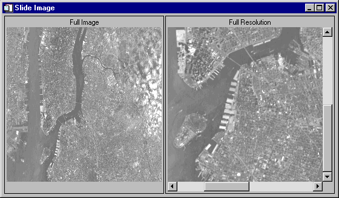

The SLIDE_IMAGE procedure creates a scrolling graphics window for examining large images. By default, 2 draw widgets are used. The draw widget on the left shows a reduced version of the complete image, while the draw widget on the right displays the actual image with scrollbars that allow sliding the visible window.
This routine is written in the IDL language. Its source code can be found in the file slide_image.pro in the lib subdirectory of the IDL distribution.
SLIDE_IMAGE [, Image ] [, / BLOCK ] [, CONGRID =0] [, FULL_WINDOW = variable ] [, GROUP = widget_id ] [, / ORDER ] [, / REGISTER ] [, RETAIN ={0 | 1 | 2}] [, SLIDE_WINDOW = variable ] [, SHOW_FULL =0] [, TITLE = string ] [, TOP_ID = variable ] [, XSIZE = width ] [, XVISIBLE = width ] [, YSIZE = height ] [, YVISIBLE = height ]
A 2-D image array to be displayed. If this argument is not specified, no image is displayed. The FULL_WINDOW and SCROLL_WINDOW keywords can be used to obtain the window numbers of the two draw widgets so they can be drawn into at a later time.
Set this keyword to have XMANAGER block when this application is registered. By default, BLOCK is set equal to zero, providing access to the command line if active command line processing is available. Note that setting BLOCK=1 will cause all widget applications to block, not just this application. For more information, see the documentation for the NO_BLOCK keyword to XMANAGER.
Note: Only the outermost call to XMANAGER can block. Therefore, to have SLIDE_IMAGE block, any earlier calls to XMANAGER must have been called with the NO_BLOCK keyword. See the documentation for the NO_BLOCK keyword to XMANAGER for an example.
Normally, the image is processed with the CONGRID procedure before it is written to the fully visible window on the left. Specifying CONGIRD=0 will force the image to be drawn as is.
Set this keyword to a named variable that will contain the IDL window number of the fully visible window. This window number can be used with the WSET procedure to draw to the scrolling window at a later point.
Set this keyword to the widget ID of the widget that calls SLIDE_IMAGE. If set, the death of the caller results in the death of SLIDE_IMAGE.
This keyword is passed directly to the TV procedure to control the order in which the images are drawn. Usually, images are drawn from the bottom up. Set this keyword to a non-zero value to draw images from the top down.
Set this keyword to create a “Done” button for SLIDE_IMAGE and register the widgets with the XMANAGER procedure.
The basic widgets used in this procedure do not generate widget events, so it is not necessary to process events in an event loop. The default is therefore to simply create the widgets and return. Hence, when REGISTER is not set, SLIDE_IMAGE can be displayed and the user can still type commands at the IDL command prompt.
This keyword is passed directly to the WIDGET_DRAW function. RETAIN specifies how backing store should be handled for the window. Valid values are:
0 — Specifies no backing store. In this case, it is recommended that the REGISTER keyword be set so that expose and scroll events are handled.
1 — Requests that the server or window system provide backing store. This is the default if RETAIN is not specified.
2 — Specifies that IDL provide backing store directly.
Set this keyword to a named variable that will contain the IDL window number of the sliding window. This window number can be used with the WSET procedure to draw to the scrolling window at a later time.
Set this keyword to zero to show the entire image at full resolution in one scrolling graphics window. By default, SHOW_FULL is set, displaying two draw widgets.
Set this keyword to the title to be used for the SLIDE_IMAGE widget. If this keyword is not specified, “Slide Image” is used.
Set this keyword to a named variable that will contain the top widget ID of the SLIDE_IMAGE hierarchy. This ID can be used to kill the hierarchy as shown below:
SLIDE_IMAGE, TOP_ID=base, ...
WIDGET_CONTROL, /DESTROY, base
Set this keyword to the maximum width of the image that can be displayed by the scrolling window. This keyword should not be confused with the visible size of the image, controlled by the XVISIBLE keyword. If XSIZE is not specified, the width of Image is used. If Image is not specified, 256 is used.
Set this keyword to the width of the viewport on the scrolling window. If this keyword is not specified, 256 is used.
Set this keyword to the maximum height of the image that can be displayed by the scrolling window. This keyword should not be confused with the visible size of the image, controlled by the YVISIBLE keyword. If YSIZE is not present the height of Image is used. If Image is not specified, 256 is used.
Set this keyword to the height of the viewport on the scrolling window. If this keyword is not present, 256 is used.
The following example imports a grayscale image from the nyny.dat binary file. This grayscale image is an aerial view of New York City. The image contains byte data values and is 768 pixels by 512 pixels. You can use the SLIDE_IMAGE procedure to zoom in on the image and pan over it.
Example Code:
See
panning_direct.
pro
in the
examples/doc/image
subdirectory of the IDL installation directory for code that duplicates this example. Run the example procedure by entering
panning_direct
at the IDL command prompt or view the file in an IDL Editor window by entering
.EDIT panning_direct.pro
.
| 1. | Determine the path to the nyny.dat file: |
file = FILEPATH('nyny.dat', $
SUBDIRECTORY = ['examples', 'data'])
| 2. | Initialize the image size parameter: |
imageSize = [768, 512]
| 3. | Import the image from the file: |
image = READ_BINARY(file, DATA_DIMS = imageSize)
| 4. | If you are running IDL on a TrueColor display, set the DECOMPOSED keyword to the DEVICE command to zero before your first color table related routine is used within an IDL session or program. |
DEVICE, DECOMPOSED = 0
| 5. | Load a grayscale color table: |
LOADCT, 0
| 6. | Display the image with the SLIDE_IMAGE Procedure procedure: |
SLIDE_IMAGE, image
Use the sliders in the display on the right side to pan over the image.
The following figure shows a possible display within the SLIDE_IMAGE application.
|
 |
|
Pre-4.0 |
Introduced |
IIMAGE , TV , TVSCL Procedure , WIDGET_DRAW , WRITE_BMP